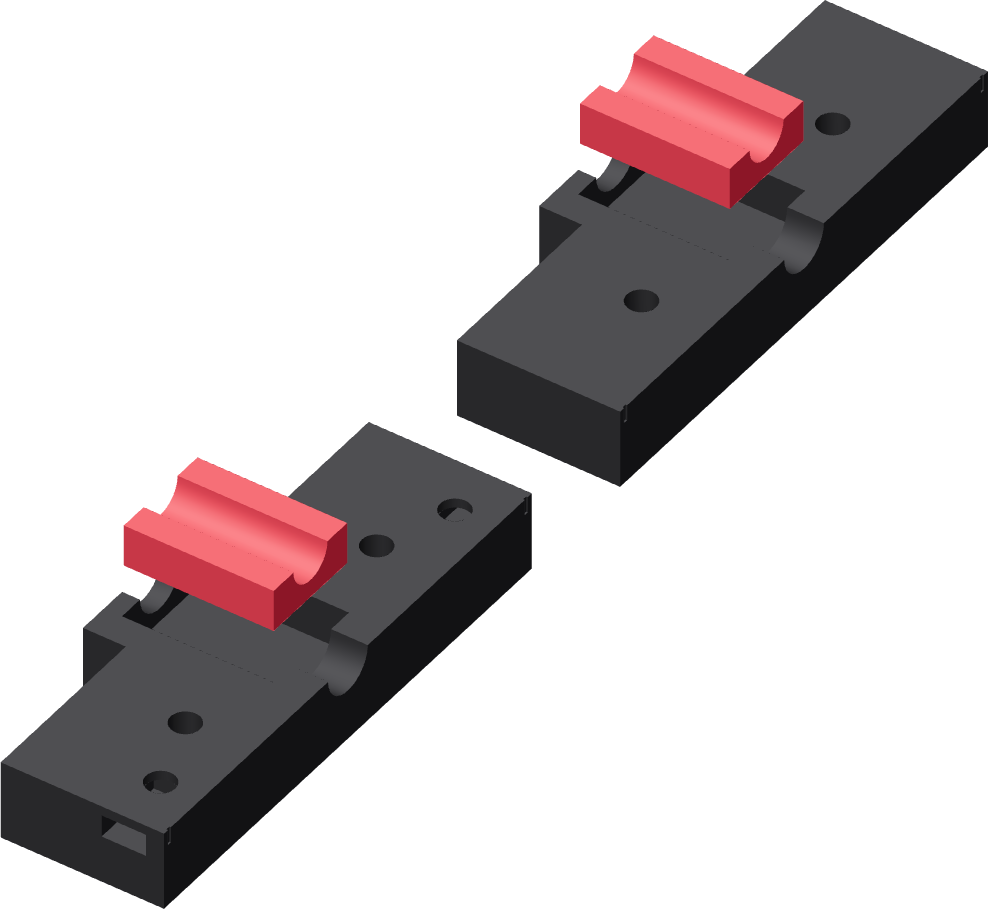

Seat one F in each jaw
The same thick liner fits each jaw. Its flat backing goes into the pocket and its smooth channel faces the tube.

- Remove D's four generated support bodies: two in its underside locating-key pockets and two in its side-entry square-nut pockets. Clear those openings before the B-to-D joint or nuts are fitted.
- Lay lower jaw D and upper jaw E pocket-up on the bench.
- Press one F liner fully into each pocket, flat backing against the pocket floor. Its half-round channel remains exposed.
- Check each backing and end edge. Both liners must lie flat, without a trapped string or raised corner.
Finished when
The four support pockets are clear and both liners are seated flat. Their channels will face one another when the jaws close.